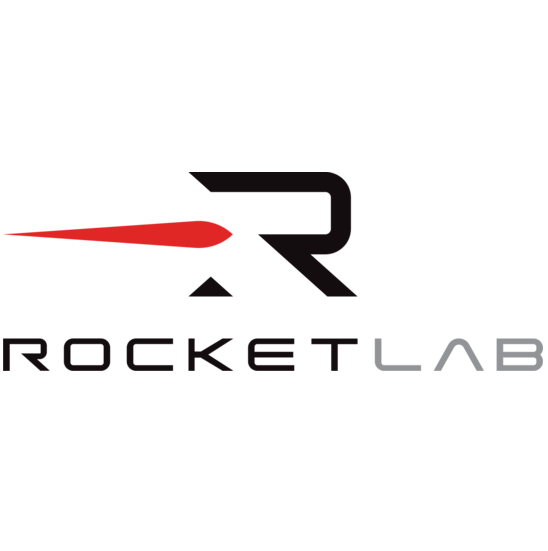

Automated Hydraulic Load Application

Background
My team has a pull-test fixture used to apply a tensile load on a separation system. The goal of this fixture is to measure preload. However, it has a long runtime because load is currently being manually applied via a lever hydraulic pump. My project is to automate load application via a control system.
The system consists of a pump, motor, solenoid control valve, solenoid relief valve, and other valves and fittings. It is operated via a National Instruments (NI) computer running LabVIEW.
Challenges
Solenoid Stiction
The first challenge I faced was stiction in my control solenoid. Due to what I believe to be static friction in the solenoid spool, the control algorithm would command the solenoid to open by a few percent, but it would not correspond to a change in load until a certain threshold in opening was met. This resulted in a stepping increase in load, and often, an overshoot compared to the ramped increase in setpoint. I addressed this issue by dithering the control signal, that is, putting Gaussian white noise over the control signal such that the spool was constantly moving and in the realm of kinetic friction.
Procurement Challenges
Since I was selecting and ordering parts for the whole system, I had to manage multiple vendors, which took more weeks than I had expected. To manage the impacts of this, I worked in parallel to procurement everywhere I could. For example, while parts were on order, I wrote the LabVIEW state machine software, and I CAD modeled the system in NX.
Results
Successful load application within setpoint requirements
Automated control of load with a ramp and soak setpoint profile.
Decreased runtime from 1 hour to 5 minutes
Saved engineer time by automatically adding load to the system and acquiring data. Especially important as this is a test that is conducted for every production unit.